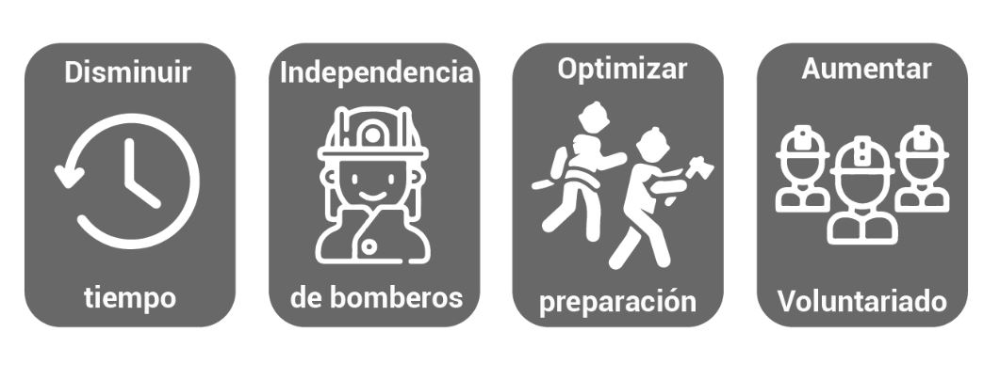

El proyecto busca reformar el funcionamiento completo del cuerpo de bomberos. Para esto se debe separar a la persona de la compañia, es decir, al bombero de los vehículos.
Se busca generar la independencia del bombero. Ya que, este no solo trabaja en la compañía, sino que, también atiende su profesión, por lo cual no puede estar tiempo completo como bombero.
Por esto, se busca crear una serie de establecimientos en toda la Región Metropolitana, que contengan módulos independientes, los que contengan las herramientas necesarias para reaccionar a las emergencias.
Al ser independientes no es necesario que los bomberos estén en un mismo lugar, ya que se crea una aplicación para los celulares, que cuando se haga una llamada de emergencia, los trabajadores de las marcas, Uber, Cabify, Didi y entre otros, recibirán un mensaje sobre esta emergencia y si tienen algún bombero cerca de ellos para llevarlo a la zona, en donde ya estaría nuestros carros del BEMO.
Quitando así, la necesidad de reunir a los bomberos en una misma zona para buscar sus herramientas y de ahí ir a la zona de emergencia, ahorrando tiempo para que ellos lleguen y actúen en la zona de emergencia.
